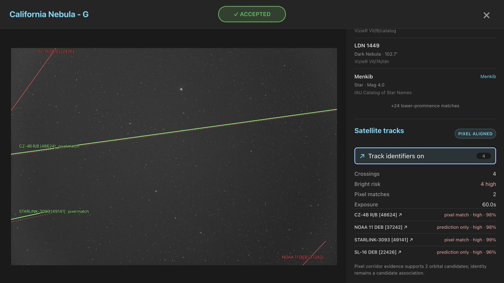

Satellite Tracks
PSF Guard predicts which cataloged satellites crossed a solved frame while its shutter was open, then checks the pixels along each path for a matching trail. This page covers the overlay, the metadata it needs, how trails affect scores, and the orbital-element cache.

Identify satellite tracks
- Open an image and find the Satellite tracks panel.
- Click Identify satellite tracks, or press T. PSF Guard solves the frame first when no valid solution is cached.
- Use Show track identifiers to turn the overlay on and off. Red, yellow and cyan dashed lines are high, possible and low-risk predictions; a solid green line is the fitted pixel path.
- Click a named result to open its satellite information page.
The panel lists Crossings, Bright risk, Pixel matches, Exposure and the Element source (CelesTrak active, Seiza mirror or IAU SatChecker). Its badge reads Predicted or, once a trail matches, Pixel aligned.
Track prediction
PSF Guard uses Seiza 0.24.0 and seiza-satellites 0.13.0. Since Seiza 0.23.1, tracks are predicted with the WGS72 constants their orbital elements were fitted with. This moves a track by up to tens of arcseconds. Predictions cached by an earlier version are recomputed by the next quality scan.
Required metadata
A prediction needs three inputs. Without any one of them the check abstains instead of calling the frame clean.
| Input | Accepted forms |
|---|---|
| Pixel WCS | A solve of the frame. Identify satellite tracks runs the hinted or blind solver when none is cached. |
| UTC shutter interval | In order of preference: DATE-BEG or DATE-OBS through DATE-END; DATE-AVG plus EXPTIME or EXPOSURE; a start time plus EXPTIME or EXPOSURE. |
| Observing site | SITELAT/SITELONG, LAT-OBS/LONG-OBS or OBSGEO-B/OBSGEO-L. Altitude from SITEELEV, SITEELEVATION, ALT-OBS or OBSGEO-H; sea level when missing. |
DATE-AVG centers the interval on the writer's measured midpoint, so PSF Guard need not guess whether a timestamp marks shutter open or the end of readout.
Pixel alignment
The matcher downsamples the frame once to at most 2,048 pixels on its long side, estimates local noise, and runs a coarse-to-fine matched-filter search in a narrow corridor around each predicted path. A match needs at least 2.0 sigma robust line contrast, 65% path continuity and 50% usable coverage. A track without enough in-frame evidence is reported as not evaluated, not as a clean miss.
The result keeps the fitted segments, offsets, angle difference, contrast in physical ADU, significance, continuity, coverage and search radius beside the untouched orbital path. Work grows with the number of predicted crossings: the matcher never searches the whole frame for arbitrary lines or names an unrelated trail.
Risk and grading
Risk is a 0–1 heuristic from sunlight, range, elevation and clipped path length. It is not an apparent magnitude: the catalog has no reliable brightness model for the exposure band, and attitude and flares change what you see.
| Evidence | Effect |
|---|---|
| Prediction only, any risk | Shown on the overlay. No warning and no score change. |
| Pixel-aligned trail | Satellite Trail Detected cause; score capped at 0.75 for review. |
| High-risk prediction with a pixel-aligned trail | Score capped at 0.35, and a rejection proposed: [Auto] Pixel-aligned bright satellite trail. |
Every proposed rejection still goes through the per-image review in Sequence, and existing rejections stay as they are. When stacking removes trails anyway, set Satellite trails to 0% in the Sequence view's Scoring control, or pass --ignore-satellites to screen-fits. Trails then neither lower the score nor drive rejections, but a confirmed trail still shows as a warning and on the overlay.
Validation on real exposures
The thresholds were checked on two unmodified 60-second G-filter exposures of the California Nebula from October 2025, with historical elements from the IAU SatChecker archive. These figures come from Seiza 0.10 and seiza-satellites 0.2. The brighter frame solved 101 stars at 1.90 arcsec RMS, and four high-risk crossings were predicted:
- CZ-4B R/B [48624] matched at 57.8 sigma and 100% continuity, about 30 pixels from the raw prediction.
- STARLINK-3093 [49141] matched at 4.2 sigma and 100% continuity, about 76 pixels from the raw prediction.
- The other two had low contrast and continuity and stayed prediction-only.
The fainter frame from the night before solved 102 stars at 1.96 arcsec RMS. Of three predicted crossings, only STARLINK-5450 [54778] matched: 5.8 sigma, 99.7% continuity, about 43 pixels from the orbital path. Both dry-run regrades flag the affected frame for rejection on pixel-aligned evidence.
Orbital-element cache
PSF Guard downloads orbital elements only on an explicit action: Identify satellite tracks, or a quality scan you start with Analyze Quality. Opening Sequence and running screen-fits --regrade-db use the cache only, and the CLI abstains when no suitable snapshot exists.
- Recent exposures use CelesTrak's active-satellite catalog.
- Older exposures use a nearby cached entry, then the Seiza rolling mirror, then the public IAU SatChecker service. One historical answer serves the whole observing night.
- Current and historical snapshots share one cache, 5 GiB by default. Past that, the oldest downloads go first, and the newest is always kept.
For offline or reproducible work, name a local OMM JSON or TLE file in the registry. A relative path resolves below data_dir:
"astrometry": {
"data_dir": "/var/lib/psf-guard/seiza",
"satellite_elements": "historical.tle"
}Results for each image live under <cache>/<db-slug>/satellites/<image-id>.json. Each records the FITS fingerprint, the exact WCS, the timing and site headers, the element source with its payload SHA-256, the alignment version and the Seiza versions. A change to the image, the solve or the software makes the next scan recompute it. API clients can send {"force_satellites": true} to the quality-scan endpoint to recompute every prediction against the snapshot the cache now prefers.
When the CLI and the server share the default ./cache, no option is needed. Otherwise give screen-fits the server's cache root:
psf-guard screen-fits /path/to/lights \
--regrade-db my-db --cache-dir /var/cache/psf-guard --dry-run